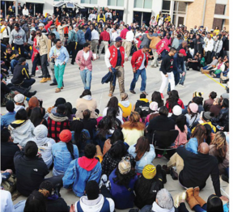

Marching Mizzou has always had a strong presence during the Homecoming parade and the Homecoming Game.

Mizzou's homecoming is a combination of events from four different organizations. For a complete list of the events, check out our calendar. History of Faurot Field Click here for to learn more about how Faurot Field has become synomous with Mizzou Football and Homecoming.
 Missourian Homecoming Guide
Missourian Homecoming Guide